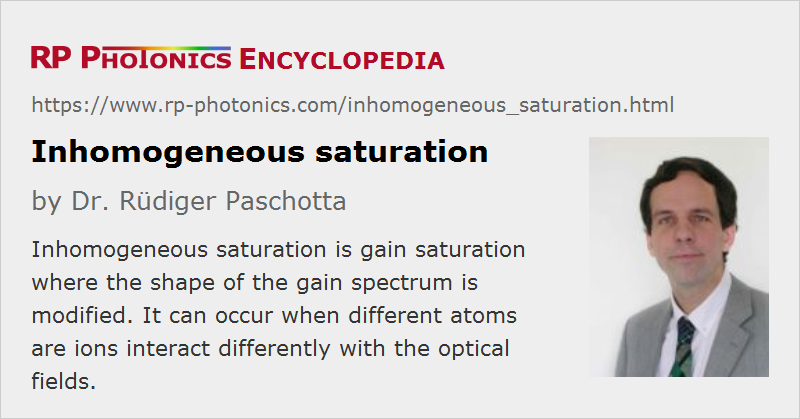

Inhomogeneous Saturation
Definition: gain saturation effects which alter the shape of the gain spectrum
German: inhomogene Sättigung
Category: physical foundations
How to cite the article; suggest additional literature
Author: Dr. Rüdiger Paschotta
When a gain medium amplifies a strong laser beam, the gain is saturated, i.e. reduced to some extent. Under certain circumstances, the saturation can be inhomogeneous, i.e. it can be stronger around the wavelength of the laser beam than at other wavelengths.

Figure 1: A demonstration of inhomogeneous gain saturation. A laser at 1064 nm saturates the gain around 1064 nm more than the gain at other wavelengths. For comparison, the unsaturated gain (without laser power) is shown as a dotted curve.
Inhomogeneous saturation characteristics are strongly related to inhomogeneous broadening and can arise when different laser ions in the gain medium can occupy different lattice sites (assuming a solid-state medium). This is particularly the case in glasses. However, some glasses exhibit nearly homogeneous gain saturation despite the great variety of lattice sites. This is the case for, e.g., neodymium-doped phosphate glasses, whereas silicate glasses show strongly inhomogeneous saturation.
Spatial hole burning in linear laser resonators can also lead to inhomogeneous saturation. In that case, laser ions at different locations in the gain medium “see” different wavelengths with different intensities, because the period of the standing-wave pattern depends on the wavelength.
In a laser, inhomogeneous saturation characteristics can influence the optical spectrum of the laser output and restrict the wavelength tuning range. For a mode-locked laser, this effect can make it easier to obtain short pulses, but can also adversely affect the self-starting characteristics.
Questions and Comments from Users
Here you can submit questions and comments. As far as they get accepted by the author, they will appear above this paragraph together with the author’s answer. The author will decide on acceptance based on certain criteria. Essentially, the issue must be of sufficiently broad interest.
Please do not enter personal data here; we would otherwise delete it soon. (See also our privacy declaration.) If you wish to receive personal feedback or consultancy from the author, please contact him e.g. via e-mail.
By submitting the information, you give your consent to the potential publication of your inputs on our website according to our rules. (If you later retract your consent, we will delete those inputs.) As your inputs are first reviewed by the author, they may be published with some delay.
See also: gain saturation, inhomogeneous broadening, homogeneous saturation, spatial hole burning
and other articles in the category physical foundations
|  |
If you like this page, please share the link with your friends and colleagues, e.g. via social media:
These sharing buttons are implemented in a privacy-friendly way!